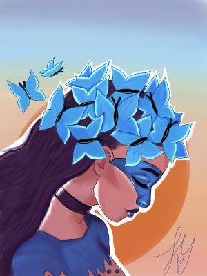
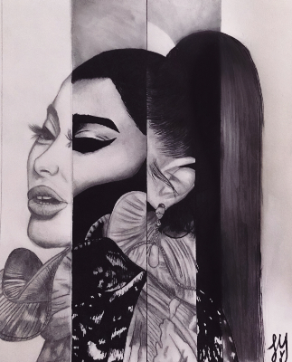
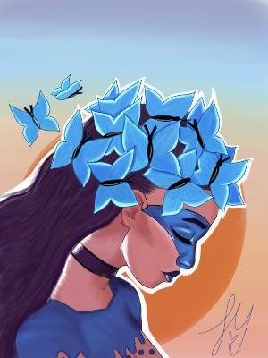
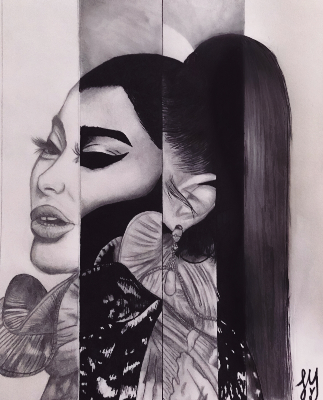

My Resume
Hello,my name is Larisma Maduro and I am originally from the United States Virgin Islands.I am seeking a Bachelor's Degree in Graphic Design at the University of Central Florida once getting my Associates Degree at Seminole State College.While I am anticipating that time in my life I also want to seek an internship that would help me get an experience in the field of Graphic Design.In the past I have designed posters for school events,along with designing shirts whether it was for an event for community service, for a family member, or for my senior class.I have always wanted to be a creative outlet in terms of advertising, design, or fine arts in general.
 


